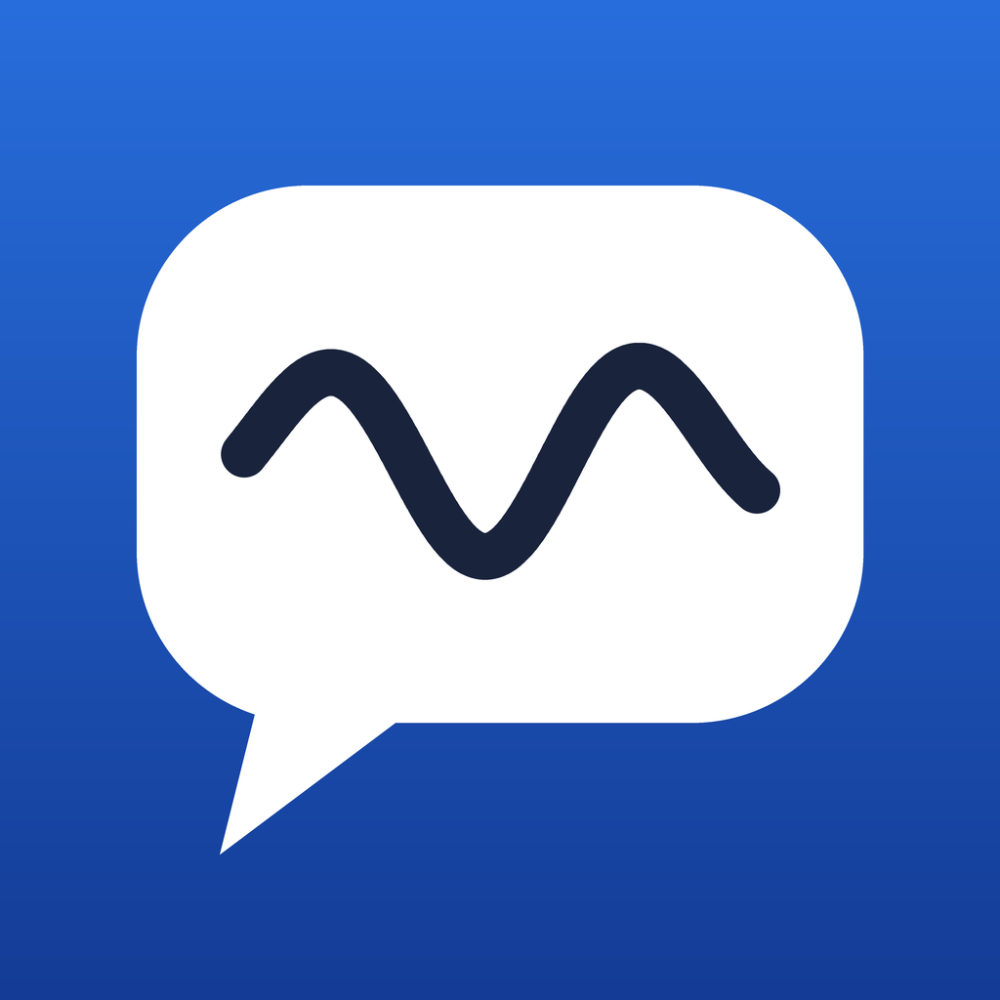

Privacy policy
Effective October 16, 2026
Inkspoken does not collect any data. Everything the app does happens on your iPad, and nothing you write or say is sent to us or to anyone else.
What stays on your iPad
Inkspoken stores your handwriting samples, the items you've trained, words you've used, profiles and settings in the app's own storage on your iPad. Handwriting recognition, learning from your samples and speech all run on the device. The app makes no network connections.
What we don't do
- No accounts or sign-in.
- No analytics, tracking, advertising or third-party SDKs.
- No sharing or selling of data, because we never have it.
Backups you choose to make
If you use Tune › Backup, Inkspoken writes a file on your iPad. It goes only where you send it, such as the Files app, iCloud Drive or AirDrop. Those services are covered by Apple's privacy policy, not ours. Your iPad's own iCloud or computer backups may also include the app's data, as they do for any app.
Children
Inkspoken collects no personal information from anyone, including children.
Changes
If this policy ever changes, the new version will be posted on this page with a new effective date.